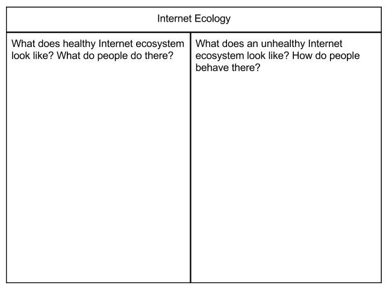

Internet Health Basics | An Introduction to Internet Health
30 minutes
Learn the basics of Internet health and related issues by comparing and contrasing healthy and unhealthy behaviors on popular apps and sites using skills like evaluate, protect, share, and synthesize.
Web Literacy Skills
-
Read
Synthesize -
Participate
Protect Share
21st Century Skills
Learning Objectives
- Understand and explain Internet health in general terms.
- Identify healthy and unhealthy online behaviors on popular apps and sites.
- Adopt healthy online habits to share with others.
Audience
- 13+
- Beginner web users
Materials
- A compare and contrast chart like the one below
-
Preparation
Review the entire lesson and try each activity so you know how it works.
Visit Mozilla’s Internet health site and Internet Health Report to learn more about issues related to Internet health.
-
Introduction
10 minutesBegin by welcoming your learners and introducing the idea of Internet health by saying something like this:
A healthy Internet needs all of us. The Internet is our largest shared global resource. The healthier it is, the more it benefits everyone. We can all be a part of keeping the Internet open, safe and accessible.
A healthy Internet help people live and learn online. It includes everyone in its possibilities. It belongs to the people and resists being closed off or broken apart. On a healthy Internet, we are all free to share and benefit from one another's innovative, new ideas because of a culture of inclusivity, openness, and care.
Some big ideas connected to Internet health include:
- Web Literacy - People everywhere should have the knowledge they need to tap into the full power of the Internet - and to use it to make their lives and the world better. This means that everyone needs the skills to read, write and participate online. For this to happen, web literacy must be foundational in education, alongside skills like reading and math.
- Digital Inclusion - A healthy Internet is for everyone. People — no matter where they live in the world, their income, their language, the color of their skin, their political affiliation, their religion, their physical ability, their sexual orientation, or their gender — should have unfettered access to the Internet. They should be able to both consume and create online, so that the Internet reflects the diversity of the people who use it.
- Privacy and Security - A healthy Internet is private and secure. Internet users should be able to have greater choice over what information they share with what organizations and for what benefit. They should have the freedom to express themselves online without unwarranted surveillance. And, they should be able to safeguard their information against attacks.
- Decentralization - A healthy Internet is decentralized. There shouldn’t be online monopolies or oligopolies. Instead, big and small businesses — and individuals from around the world — should all be able to contribute to and provide online services. Internet users should be able to reap the benefits of competition and exposure to different ways of thinking.
- Open Innovation - A healthy Internet is open, so that together, we can innovate. People who want to change the world should be able to build products and understand different points of view through open source code and idea sharing. Copyright and patent laws should be reformed so that in this digital age, they foster collaboration and economic opportunity.
Internet health depends on us to adopt habits that promote shared values like these. It doesn’t happen by itself. It depends, in part, on us and our decisions, but we're not alone. All of these topics are impacted by companies and governments, as well as by individuals. There are laws and political decisions made about these topics being made all the time, like policies that protect privacy or laws that prevent one company or another from dominating a market related to the Internet and Internet health.
After introducing Internet health, invite for 3-5 volunteers to share their responses to questions like these before going on in the lesson:
- Which of those ideas seem most important to you? Which ones interest you the most?
- Do you have any ideas or questions about how those ideas might connect to Internet health in our community or in your own life?
- What do you think might happen if we let the Internet become too unhealthy?
-
Offline Activity
15 minutesIn this step, you and your learners will compare and contrast health and unhealthy online behavior on popular sites or apps.
The big idea is to help learners see the kinds of choices they have about their online behavior.
You can ask for suggestions from your learners, but make sure that the apps and sites you use are appropriate, inclusive, and positive for your community.
Begin by saying something like:
To keep learning about Internet health, we’re going to think about healthy and unhealthy behavior on some of our favorite apps or sites. Unhealthy online behavior is sometimes also called “toxic” behavior because it poisons communities. Let’s think about what a helath Internet might look like and contrast it against what an unhealthy one might be like.
Let's imagine the Internet as an ecosystem - as a vast habitat or system made up of countless systems and individual pieces that all contribute something to the environment around them. What if the Internet was an ocean or rainforest or desert?
How would that Internet ecosystem look when it was healthy? What would people do there? How would that Internet ecosystem look if it was unhealthy? What kinds of human behavior would make it unhealthy?
As you invite responses from your learners, chart their answers somewhere easily accessible and readable in your learning space. You can use a simple chart like this:

Make sure you document and share the ideas you come up with together.
Repeat the process with new charts for 1 or 2 more apps or sites before moving on to the next step.
-
Reflection & Assessment
5 minutesFacilitate a brief reflective discussion on what your learners discovered about Internet health. You can record learners’ responses for the purposes of assessment, but be sure to do so in an equitable way that doesn’t disadvantage one learner or another because of your choice of medium. You might use prompts like these or create your own:
- What surprised you today?
- In your own words, how would you explain Internet health?
- What are some healthy habits we should try to form online?
- What are some unhealthy habits we all should avoid online?
- Which of the Internet health issues interests you the most? Why?
- What is something you could do right now that would help improve Internet health?
Learn more with the Internet Health Report!